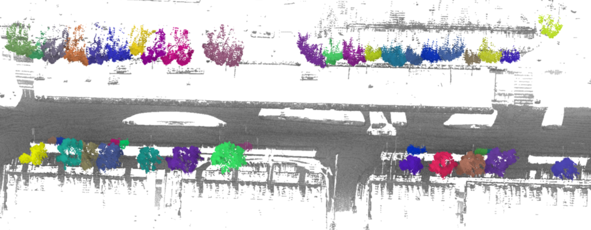
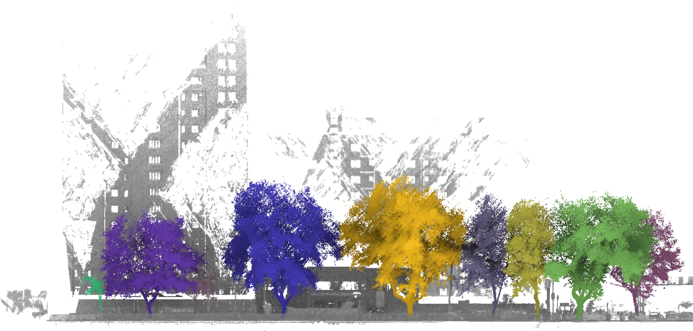
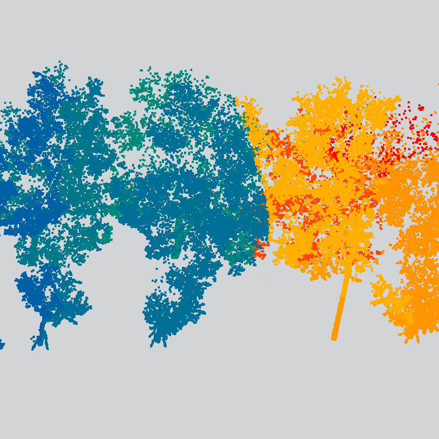
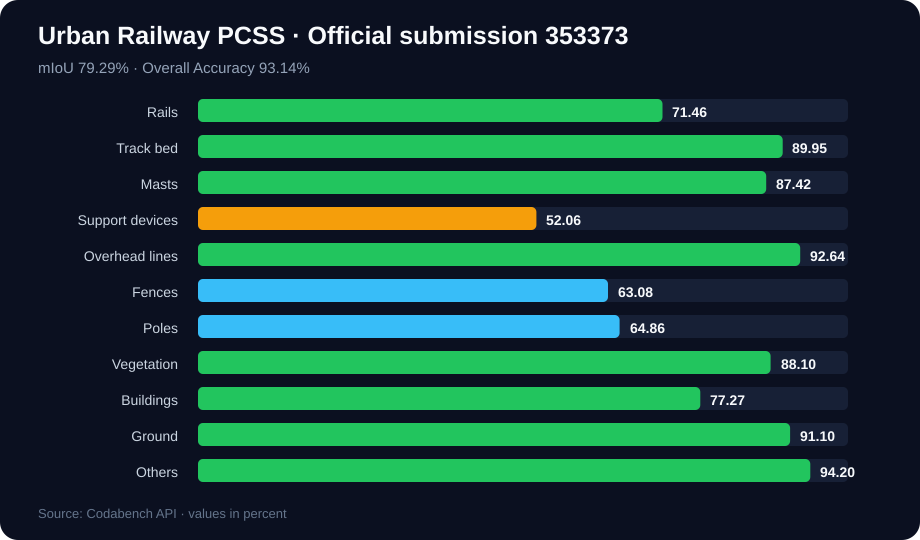

Point Cloud Segmentation Competition
9th China LiDAR Conference
Point Cloud Intelligent Parsing Competition
June–September 2025 · Presented in Wuhan, China
Independent work with faculty guidance
I participated in three tracks and received two awards. I carried out the competition work independently under the supervision of Junnan Xiong and Hongliang Jia.
My responsibilities covered point cloud preparation, coding, model training, inference, evaluation, error analysis, and an on-site technical presentation. The projects used existing segmentation methods as their foundation.
Competition-wide participation: Chinese Academy of Sciences conference report. Award tiers: official competition rules.
Separating neighboring trees in mobile LiDAR
The task is to assign a distinct instance ID to each tree despite uneven sampling, varied tree sizes, and touching crowns. I trained and evaluated a TreeLearn-based sparse 3D convolutional pipeline and inspected both merged-tree and split-tree errors.
Voxelization and scene tiling
The competition configuration uses 10 cm voxels and overlapping tiles. Local geometry supplies a verticality feature; aggregation combines predictions for points seen in multiple tiles.
Semantic and offset prediction
A sparse 3D convolutional encoder–decoder predicts tree/non-tree scores and 3D offsets. The published training configuration uses SoftGroup/HAIS initialization, followed by competition training.
Instance clustering
Tree confidence, verticality, and offset filters select points for HDBSCAN clustering in offset-shifted coordinates. Remaining tree points are assigned using nearby predictions.
Original-resolution output
Voxel-to-point mappings and neighbor-based label propagation return instance predictions to the original point cloud for scene-level output and evaluation.


The resulting workflow connects point-level semantic and offset predictions to individual-tree outputs. I received the Special Prize in this track and presented the method and results in Wuhan.
The repository contains the competition code and identifies its TreeLearn foundation. The contribution described here is the applied competition workflow, training, evaluation, and analysis.
Recognizing classes and separating instances
I applied SoftGroup to urban-road point clouds, evaluating semantic categories and individual object instances. The work examined per-class IoU and instance F1, including errors in crowded scenes and overlapping tree crowns.
A correct semantic label can still produce the wrong object count when two neighboring trees are grouped into one instance. Inspecting this difference helped connect segmentation outputs with the physical objects they represent.

Method and evaluation evidence: my original competition presentation, “基于 SoftGroup 的城市道路点云语义与实例分割研究.”
Railway point cloud semantic segmentation
I also submitted predictions for the WHU-Railway3D Urban Railway PCSS benchmark. The historical submission scored 79.29% mean IoU and 93.14% overall accuracy across 11 semantic classes.

What the result documents
The accepted prediction archive and saved score record document a completed competition submission. Its class-level scores help identify which railway components remain difficult to recognize.
The original 2025 source and checkpoint were lost; the current public repository is an engineering reconstruction. The historical score describes the submitted predictions and has not been reproduced with the reconstructed default configuration.
The score record was archived from Codabench on September 17, 2026. The original public submission endpoint was unavailable when this page was updated on November 22, 2026.